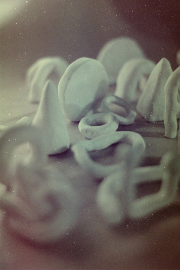

Piezas utilitarias realizadas en el 2020

Proyecto en curso. Colaboración con LUN.
Inspiradas en karesansui, las piezas invitan a generar un momento, un espacio
para realizar una intervención en el espacio, la cual
se puede montar y desmontar de multiples maneras. Todo es sujeto de ser movible.